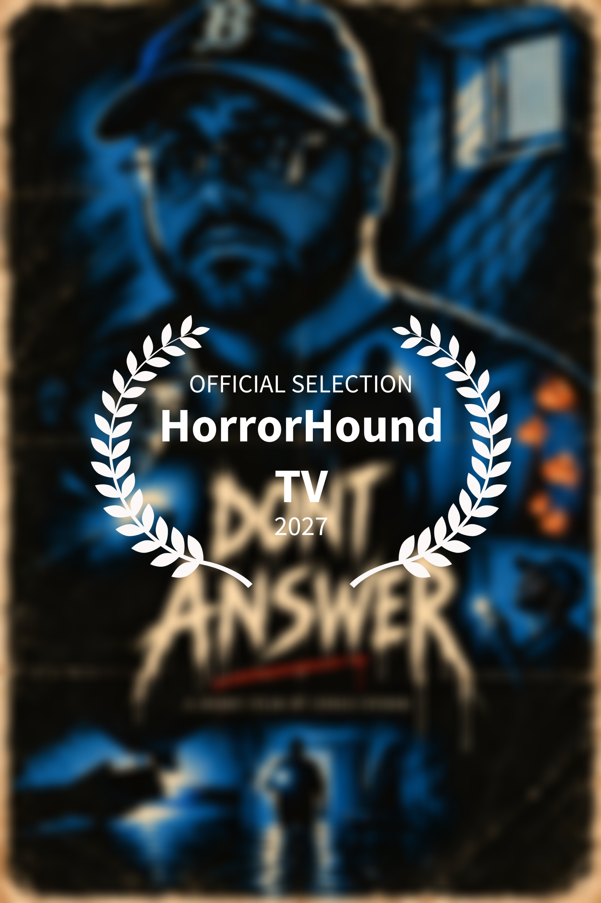

01CHRIS STORM KINOIndependent Film / Documentary
TCS · PORTFOLIO
Frames.
Stories.
Work.
Ein Auszug aus Filmprojekten, visueller Gestaltung und kommerziellem Content.

02MUSIC VIDEOArtist / Performance / Story
03COMMERCIALBrand / Product / Social
04WEDDINGMoments / Story / Emotion
05GRAPHICPoster / Social / Cover
06SOCIAL CONTENTShort Form / Reels / Campaigns
07POSTEditing / Color / VFX
08SHORT FILMIndependent / Narrative / Visual
MEHR FILM
Chris Storm Kino
Independent Films & Documentaries.
NEXT PROJECT